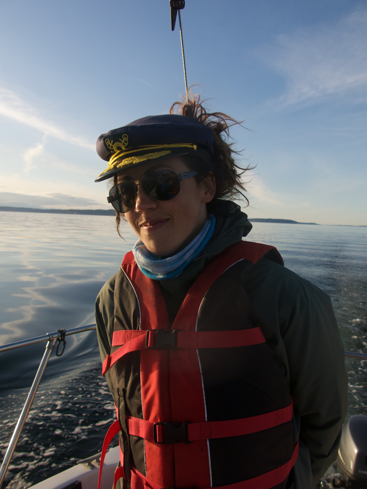
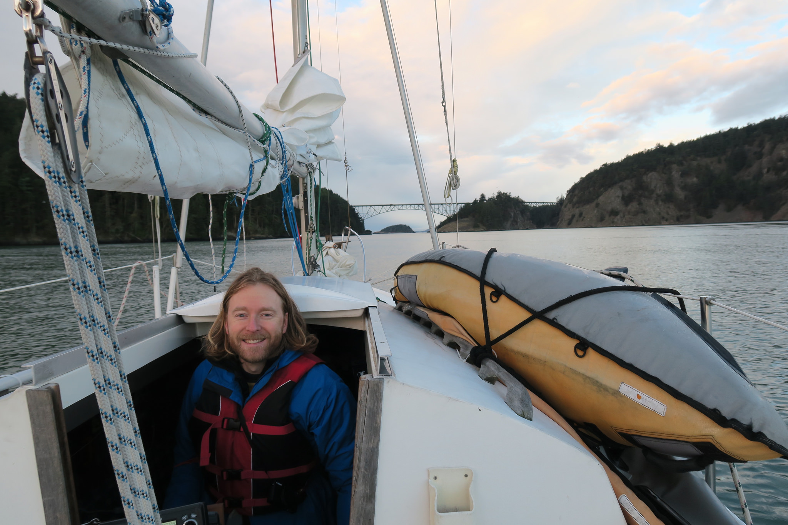

We arrived in Friday Harbor earlier this morning. Since our departure from Lopez, we spent a night in East Sound (Orcas island), where we got to check out Mt. Constitution, by which we were absolutely blown away (we had no expectations, did not know much about it and were quite surprised of such a gorgeous view up there). It is a decent hike to the top, from the boat to the bottom of the mountain first, plus the actual climb, the way back down and back to the boat. We ended up hitchiking to the top, hiked down, hitched a quick ride and walked the rest of the way to the boat, just in time for a quick stop at the grocery store and a paddle back to the boat as the sun sat. Last night, Sunday, winds were predicted to switch to S winds so we sailed to Shaw island (Blind bay) to anchor for the night, we met some interesting locals, got to play ping pong at the community center with some old folks, had a drink on the beach paddled back to the boat. I forgot the boat's registration sticker for the upcoming year likely in Port Townsend, so a visit to Friday Harbor is kind of obligated to fix that (only department of licensing in the area). We are now anchored in about 4ft of water, because Strangewaves can do this kind of thing!
We arrived in Fisherman's bay (Lopez island) yesterday evening and anchored for the night. Winds were mellow and conditions ideal. One of the coolest libraries we know of is located only a few minutes walk from our current spot. So yes, that means internet and power easily accesible, therefore we have a cubicule for the next couple of days! Our next destination isn't decided yet, we do like this current spot and will likely stick around another day or two? We will let you know how things go!
So we left as expected earlier this morning, and started to make our way to Rosario beach. We made it almost halfway and decided to turn around. The winds turned out to be more than expected and not reducing at all (was originaly predicted to do so), standing waves were uncomfortably big and against us, our guess would be maybe 5 feet, so heading back the way we came (with the waves) definitely felt like less of a struggle (even though we had to fight current on the way back) but that was a good decision overall. The boat is fine and did great, we are fine, although a little sea sick. We made it back to Port Townsend around 2pm and will now carefully check the marine forecast for the next days and leave on next window of good sailing, possibly tomorrow (destination still to come).
It is 11:37pm PT, Jon and I are both on the boat, at our usual slip in Port Townsend. After a few days of work, cleaning, running around, prepping, doing laundry, going back to get things forgotten, organizing the boat, and reorganizing it... we are finally laying down and ready to go. We are taking off tomorrow morning, around 8:30am to catch the favorable current and make it to Rosario Beach (Fidalgo island) plenty of time ahead for our two dear friends' wedding ceremony. We will likely anchor in Bowman Bay for the night. Strangewaves (the boat) is more loaded than she ever has been in the time I have owned her (just over 2 years), but everything fit nicely, or mostly and the water line is still happy. This is the beginning of the adventure!
The vision for this trip has changed quite a bit over the last couple of months but at this point we are planning on sailing around the Salish sea for a while, spending some time on various islands of the San Juan Islands (U.S), the Gulf Islands (Canada), Vancouver BC and hopefully Lasqueti Island (BC). The route is still very open, actually we haven't figured out much of it yet. We are hoping to sleep mostly at anchor, with some exceptions for cold nights, storms, need to recharge the batteries (which we will find out how long they last) or too many days of rain in a row (requiring an electric heater to dry off our clothes). As Jon will still be working on his current software project, we will be exploring libraries a lot and hunting for cafes, wifi and power. As of for me, having started learning html/css and basic programming recently, I created this blog using stuff recently learned and playing with making this site is a good way for me to pratice all this fun stuff and keep the awesome people in our lives updated about our adventure. Equipped with a 5 gallon water tank, no heater and about 33L (8.75 Gallons) of fuel, we are ready for the challenge! If winds go as planned, we are leaving Sunday April 30th early in the morning and coming back sometime in July. This is going to be by far our longest trip onboard Strangewaves!.
 That's me. I am the captain and blogger and the one mostly keeping this blog up to date. I will try my best to put updates about where we are and what we are up to every week (depending on internet connection, power and motivation). My experience with sailing is still relatively recent, but to draw the big picture I had the chance to crew a few times between 2014 and 2015 for small day-sails on friend's boats. That same winter, after a long bicycle trip from PT to San Diego, Jon and I got to live on a motor boat and had the opportunity to learn more about sailing during that same period, and the idea grew from there... I moved to Victoria in the beginning of 2015, started reading more about sailing... and looked for a boat to buy. This is how I found Strangewaves <3
 Jon, as I am sure you already know (not many people will read this blog is my guess) grew up sailing with his dad on the East Coast and has had an interest in sailing for a long time. He had the chance to crew with a good friend of ours from Port Townsend to Petersberg, AK, a couple of years ago (check out his pictures). With his great skill at convincing his friends to get boats (so he gets to crew and not maintain the thing) he was definitely a significant part of the beginning of my quest to find a sailboat. This said, I am glad he did and sailing with such a goofball is quite a wonderful thing. Silly when conditions allow it, serious/cautious when needed, and so far never seasick (in my experience with him at least), it's a lot of fun to cruise with him.
The Boat is a Tanzer 7.5 (stands for 7.5 meters, so just under 25 feet), built in 1978. She is a sloop and was designed by Johann Tanzer. The 7.5 model was designed with two different keels, the fin keel and shoal keel (the one Strangewaves has), with only 2.67ft draft. She is equipped with a 9.9 horsepower 2012 Yahama outboard engine (kick ass little thing), 5 (19L) Gallons water tank (that's right, but we do have extra gallons stashed everywhere), about 33L (8.75Gallons) of fuel capacity, and no source of heating at anchor. We are not sissies (we hope)!
She was purchased by myself in Victoria, BC in March 2015 as I was looking for both a cheap place to live in Victoria and a way to do more sailing.